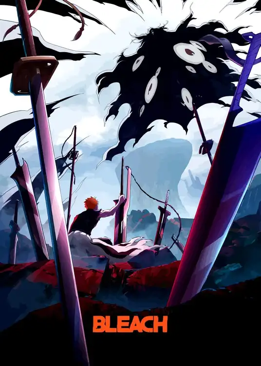

Résumé
Bleach est un anime adapté du manga de Tite Kubo, diffusé depuis 2004. Ichigo Kurosaki obtient les pouvoirs d'un Shinigami et combat les esprits maléfiques appelés Hollows.

Bleach est un anime adapté du manga de Tite Kubo, diffusé depuis 2004. Ichigo Kurosaki obtient les pouvoirs d'un Shinigami et combat les esprits maléfiques appelés Hollows.
82
Notre avis
Un shōnen culte, avec des combats marquants et une bande-son mémorable.